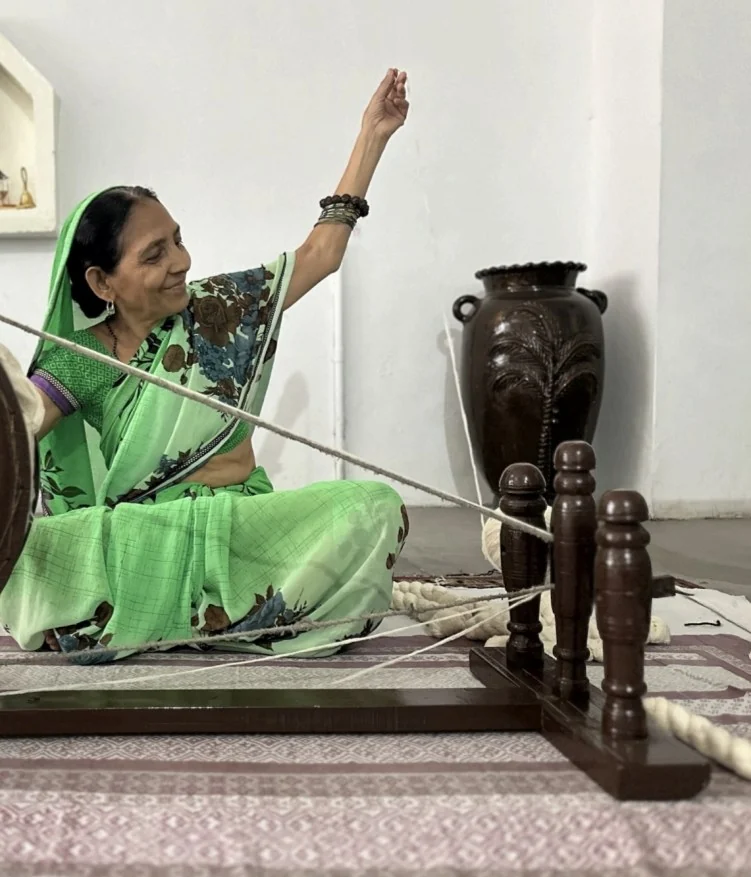

Punjab
Phulkari
„Blumenarbeit“: Stickerei mit glänzendem Seidengarn auf grobem Baumwollstoff, Stich für Stich zu leuchtenden Flächen gelegt.
Bald in Deutschland
Handgestrickte Pullover und Cardigans aus dem Punjab – Masche für Masche, inspiriert von indischer Textilkunst.
Sag mir Bescheid Eine Nachricht, sobald die Ware da ist. Kein Spam.Jedes Stück entsteht Masche für Masche im Punjab – ohne Maschine, mit Zeit und Geduld.
Muster aus Phulkari-Stickerei, Kantha-Quilts und Dhurrie-Teppichen, neu übersetzt in Strick.
Merino und Lammwolle – weich, warm und gemacht für lange Winter.
Woher die Muster kommen
Jede Loomy-Kollektion greift eine Handwerkstradition auf, die in Indien seit Generationen weitergegeben wird.
Punjab
„Blumenarbeit“: Stickerei mit glänzendem Seidengarn auf grobem Baumwollstoff, Stich für Stich zu leuchtenden Flächen gelegt.
Bengalen
Alte Saris, in Lagen übereinandergelegt und mit feinen Vorstichen zu Decken gesteppt – nichts wird weggeworfen.
Rajasthan
Flachgewebte Teppiche, wie sie in Jodhpur auf Handwebstühlen entstehen: klare Streifen, Stufen und Zacken.

Aus dem Atelier
Eingekauft und gestrickt wird im Punjab, in der Region, aus der viele unserer Muster stammen. Jeder Pullover geht dort durch viele Hände, bevor er die Reise nach Deutschland antritt.
Im Bild: Garn am Spinnrad.
Loomy Germany
Patrick bringt Loomy nach Deutschland und ist hier dein Ansprechpartner – für Fragen, Bestellungen und alles rund um die erste Lieferung.
Kontaktinfo@loomy.clothing
Für Läden und Boutiquen
Du führst eine Boutique, einen Concept Store oder einen Laden für faire Mode und möchtest Loomy anbieten? Schreib uns. Wir schicken dir gern das Lookbook und alle Infos zu den Konditionen.
Händleranfrageninfo@loomy.clothing
Ab sofort in Deutschland
Die erste Ware ist bald da.
Wir warten noch auf die erste Lieferung aus dem Punjab. Schreib uns, dann sagen wir dir Bescheid, sobald die ersten Stücke hier sind.
Schreib uns eine kurze E-Mail. Wir melden uns einmal bei dir, sobald die erste Ware in Deutschland ist.
E-Mail schreibenOder direkt an: info@loomy.clothing. Deine Adresse nutzen wir nur für diese eine Nachricht.